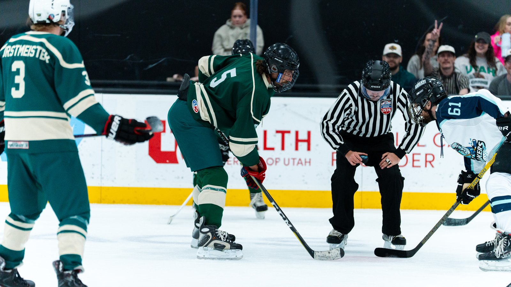

Late-Night Beer League Hockey: How to Survive the 11 PM Game
November 16, 2026 • 5 min read • By Utah Glizzies HC

Nobody dreams of a 10:45 PM puck drop. Ice time is a scarce resource, though, so the late slot is where a lot of adult hockey lives. If your game ends after midnight and your alarm goes off at 6 AM, this guide is for you.
The Problem With Late Hockey
Hockey revs up your nervous system. Sports-science folks at USA Hockey have pointed out that after a late game, players are wired, which makes falling asleep hard. Add a long drive, a locker room beer, and a phone, and sleep gets worse fast.
Before the Game
Eat earlier, and lighter. A balanced meal with carbs and some protein a couple of hours out beats a burrito at 10 PM.
Hydrate all day. Show up already hydrated, not trying to catch up in the locker room.
Mind your naps. A short nap earlier in the day can help. A late-afternoon nap can wreck your sleep afterward.
Warm up on purpose. A few minutes of dynamic movement before stepping on the ice cuts the stiff, tired-legs feeling and helps avoid injury. See our injury prevention guide.
Go easy on the alcohol. It is a classic cause of poor sleep, even though the post-game beer is a tradition. See the unwritten rules.
Cool down. Some sports-science advice favors a cooler rinse over a long hot shower, since a lower body temperature helps sleep.
Cut the screens. Doomscrolling the group chat can wait until morning.
Protect the next night. Most sources recommend 7 to 9 hours of sleep. Bank some on the following nights.
Is It Worth It?
Yes. Late ice is cheaper and easier to get, and the people who play at 11 PM are the most committed (or most unwell) in the league. If you are still deciding whether beer league is for you, see how to join a team in Utah.
Late Puck Drops. Early Regrets.
The Utah Glizzies play out of the Utah Mammoth Ice Center in Sandy. Bring a good attitude and a second coffee. Come meet the team.